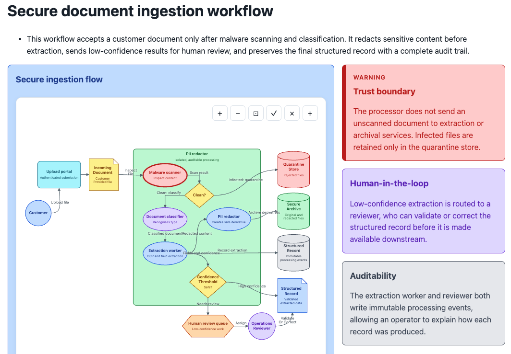
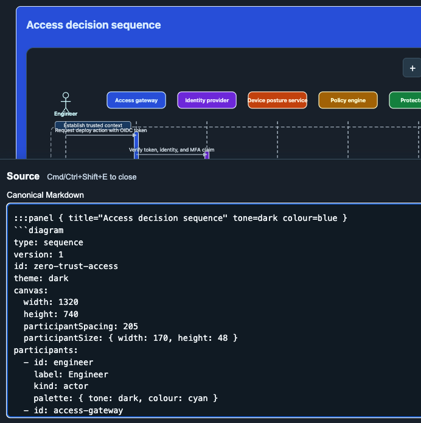
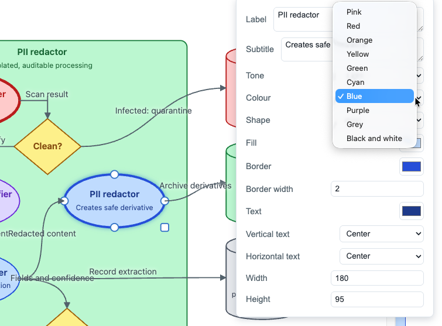

01 / AUTHOR
Describe the system
Agents write standard Markdown and explicit diagram YAML. The source is readable, reviewable, and versionable.
Skryb gives AI agents a durable format for producing beautiful technical documents: a single HTML file with canonical Markdown, diagrams, and a human-friendly editor built in.
How a customer order moves from browser to store.
Skryb keeps the machine-readable source, deterministic diagram layout, and reader-ready experience in the same place. No separate CMS, build pipeline, external authoring app, or fragile handoff format required.
Agents write standard Markdown and explicit diagram YAML. The source is readable, reviewable, and versionable.
The browser runtime turns the source into responsive documentation with deterministic, interactive SVG diagrams.
People can edit source, drag and rearrange supported diagrams, and download a complete updated document without leaving the browser.
Skryb documents remain alive after an agent creates them.
type: sequence
participants:
- id: customer
label: Customer
messages:
- from: customer
to: orders
label: Place orderA polished document with deterministic diagrams, semantic components, portable source, and an editing path that does not require the original agent, an external app, or its environment.
See a working documentLearn the document shell, create a diagram, and save a document your team can keep improving.
Skryb starts with structured source but does not stop there. Documents can present rich technical context, expose their canonical source, and let people refine diagrams directly in the browser.

Combine prose, callouts, and diagrams in one portable document that gives a system its surrounding explanation.

Open the source tray to inspect or edit the Markdown and YAML that defines the document.

Select, drag, resize, and restyle supported flowchart elements without a separate diagramming tool.